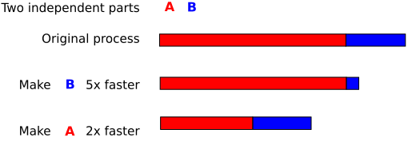

Profiling
Introduction
Know what to optimize, spend the time where it is worth it:

Optimizing two tasks (By Gorivero, Wikimedia, Public Domain)
General approach:
- Make sure that things are correct (fast but wrong does not help you)!
- Write tests so that you can be confident that your code is still correct after optimzing it.
- Measure the total run time, decide whether you need to optimize the code in the first place (see graphic below).
- Profile the code to decide where an optimization could be the most useful.
- Optimize it and go back

Is it worth the time? XKCD comic, licensed CC BY-NC 2.5